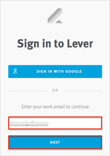

Contact the Lever Support team and request that they enable SAML 2.0 for your account.
Include the following:
Login URL: Copy and paste the following:
Sign into the Okta Admin Dashboard to generate this variable.
x.509 Certificate: Download then upload in .cert Format:
Sign into the Okta Admin Dashboard to generate this variable.
The Lever Support team will process your request. After receiving a confirmation email, you can start assigning people to the application.
Done!
Notes:
SP-initiated flows, IDP-initiated flows, and Just In Time (JIT) provisioning are all supported.
Enter your email address.
Click Next.

Click the Signn in with SAML.